Abram / Van Conversion

I started the process of converting a 2014 Ram Promaster 159" (3500 EcoDiesel engine) into a tiny home. I bought the van used with 45k miles on it.

After scrubbing the interior, I installed Rattletrap and furring strips. Rattletrap is a sound deadener, it's the silver stuff plastered all over the walls & ceiling. I had 50 square feet total, which I cut into a bunch of 6x18" strips for the walls, and 2x18" strips for the ceiling. The furring strips (horizontal pieces of wood) are intended to make the sides flush with the frame of the van. This will make installing walls easier.

I installed the first half of the subfloor. The subfloor is comprised of 3 parts: 1/4" plywood strips, 1/2" polyiso insulation, 1/2" plywood boards (in that order, from bottom to top).

The 1/4" plywood strips are intended to make the floor flat, so that the insulation doesn't bend/compress as people walk on it. As you can see, the metal floor is not a flat surface.

I finished the second half of the subfloor. It took a little while to cut out the wheel wells and get the pieces to fit seamlessly.
I took a bunch of measurements to determine the interior layout for the driver's side wall. A queen bed will extend to the left of the image, drivers seat to the right. There will be a table in front of the bench seat.

I also outlined what the wiring will look like. Diamonds denote fuses; heavy borders are energy sources. I used the app Monodraw to do this (I love this product, I use it for wireframing apps as well). I'm not sure if this is right, but it's what I came up with after watching a bunch of YouTube videos. I will run this by an electrician or someone more knowledgeable about this stuff prior to installation.
I also placed a big Amazon order. I bought everything in the wiring diagram, aside from the wires.
I taped and then cut a 14x14" hole in the roof and installed a Maxxair Fan. It has a rain cover, which is nice since I can keep the fan open even when it's raining. My dad was helping me that day, and we also installed a seat swivel base for the driver's seat. It fits well, so I ordered a second swivel for the passenger seat as well.
After installing all the 14 AWG, 12/2, and 10/3 wiring (for 12V appliances, 110V appliances, and shore power, respectively), I started on the insulation. I sprayed Great Stuff Pro into the rails/support beams of the van. Then I cut up a bunch of 1" polyiso rigid foam insulation and started installing it on the ceiling.

The wooden boards are 1/2" OSB cut into a bunch of 2" pieces. I used them to hold the insulation in place while I sprayed Great Stuff along the edges. Great Stuff will expand as it cures, and it holds the insulation in place really well.
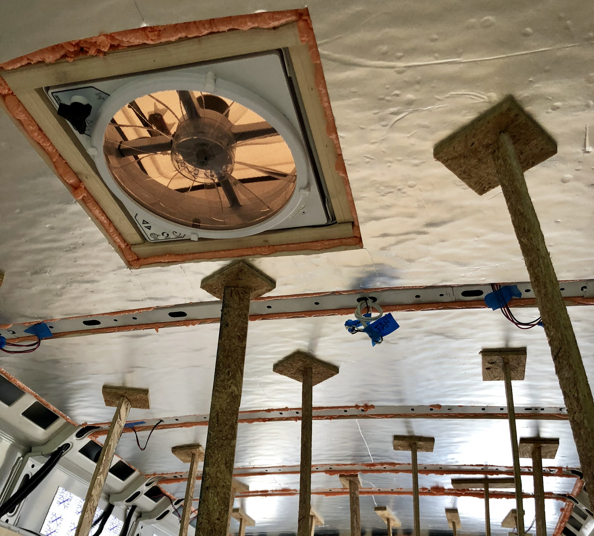I installed 2" polyiso insulation on the walls. Installing insulation isn't much fun – it takes a while and is a pain to work with.
There are a handful of areas I needed to insulate that are too large for Great Stuff, but too small/non-geometric for foam boards (large vertical beams, roof corners). So I diced some of the extra polyiso foam and installed it in those areas.
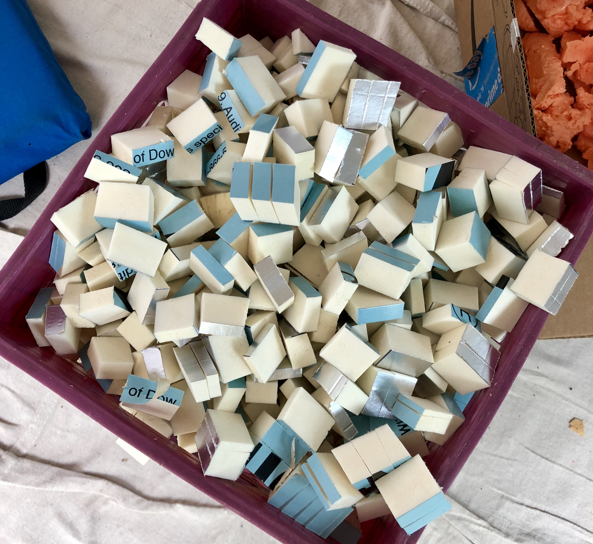I used some packaging tape to block off certain openings while placing the cubes inside.
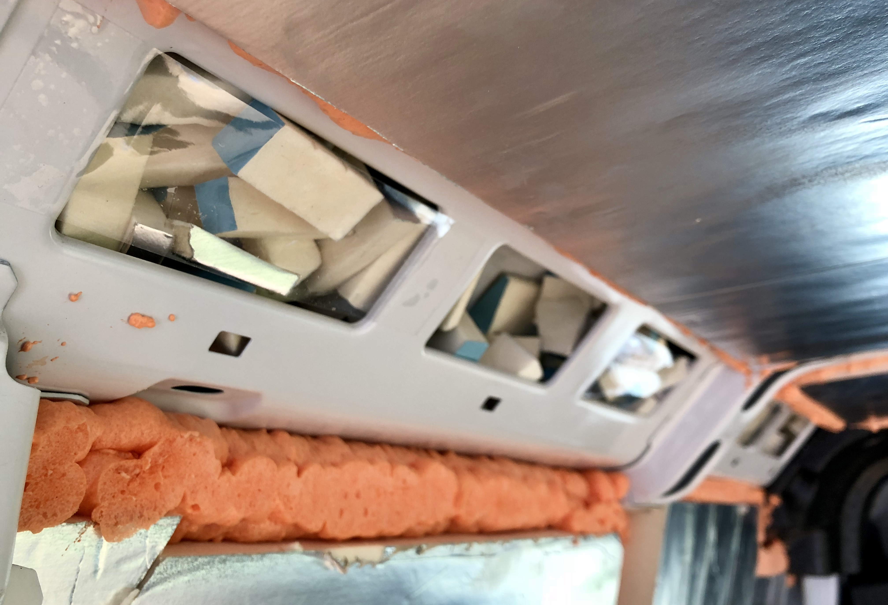I insulated the doors using 2" polyiso foam in the non-mechanical areas, and Frost King Insulation Tape in the areas that involve moving parts (handle, spring, etc).
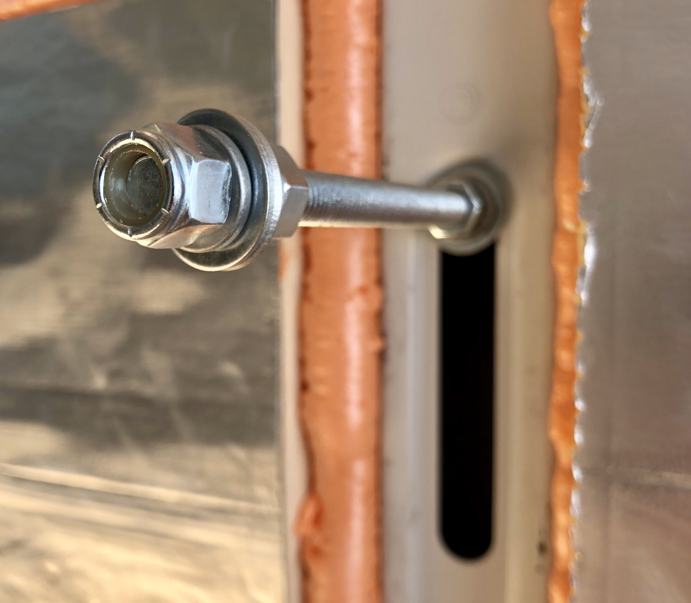I had to install bolts to anchor my bed frame to the van prior to adding the 1" poliyso insulation, since the 1" insulation will cover the rails of the van. These are 5" full-thread 5/16" bolts.
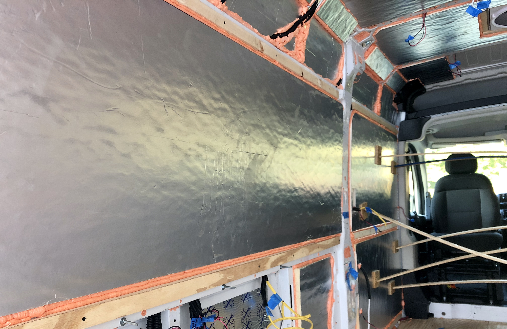I covered all the individual 2" polyiso panels with 1" panels. This will be the final layer of insulation prior to installing the plywood sheathing.
I used 5 rolls of Frost King 1" denim insulation behind the electrical board, instead of the polyiso foam. This will allow me to move wires more freely without needing to carve specific channels.
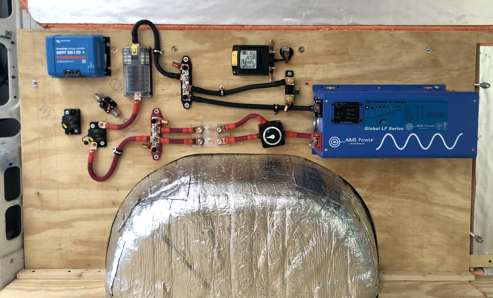Finally, with insulation being (more or less) complete, I started wiring the electrical board. I outlined where all the wires will run, and I will eventually take this all apart prior to finalizing it.
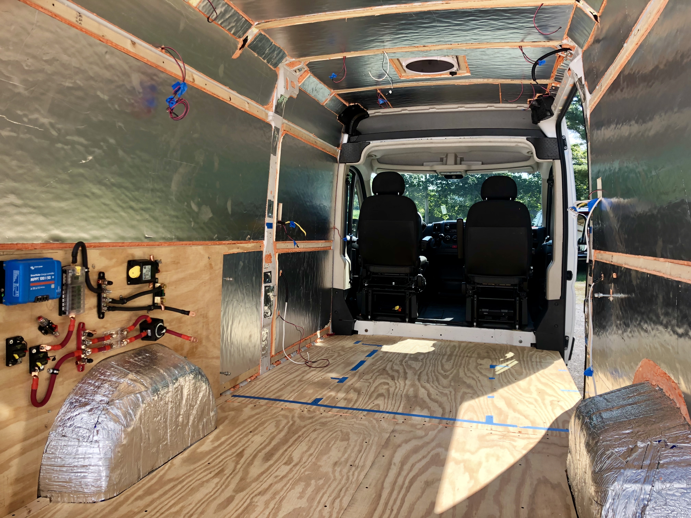What the van looks like prior to starting the plywood sheathing, which will cover the entire interior.
My brother was getting married in August and I was going to be traveling for 5 days, so I brought the van to the dealership since the check engine light came on saying I needed to repair one of the glow plugs. The dealership had been a nightmare to deal with since day 1, so the only reason I brought the van back to them was because it was still under their warranty and all repair costs would be covered by them. While repairing the glow plug, they managed to break one of the cylinders. It took them *4 weeks* to fix their mistake. From mid August to mid September I wasn't able to work on the van, so this step was a practice in patience.
Prior to working on the plywood sheathing for the walls, I ended up removing the rear floor in order to install T-nuts, which will be used to mount the L-track system in place. I should have done this when I originally installed the floor, but at that time I wasn't planning to use L-track.
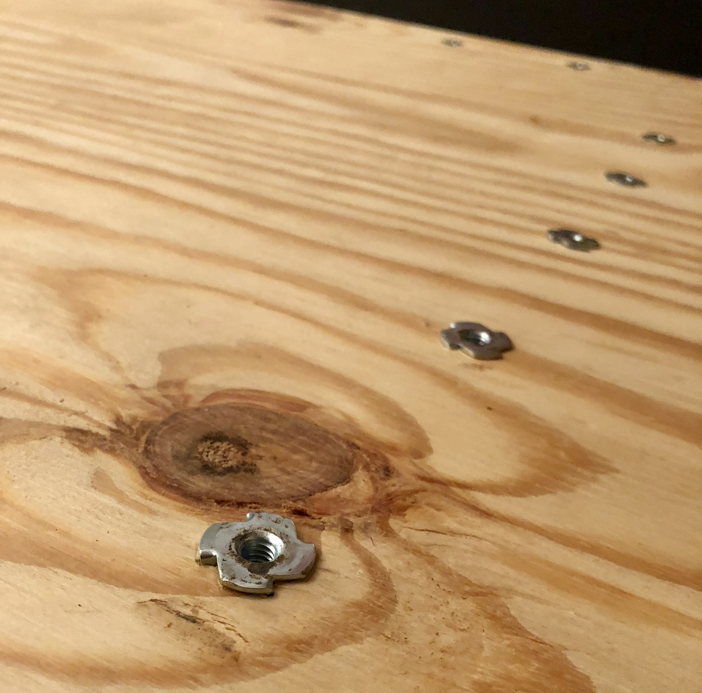T-nuts allow you to attach bolts to an area where you don't have access to the back. In this case, I won't be able to hold a nut in place while I tighten the bolt holding the L-track in place, which is why I used T-nuts. They're often used on climbing walls, since you're unable to access the rear of the wall while installing/changing the holds. The L-track will be anchored into the T-nuts using 1/4x1" stainless socket screws.
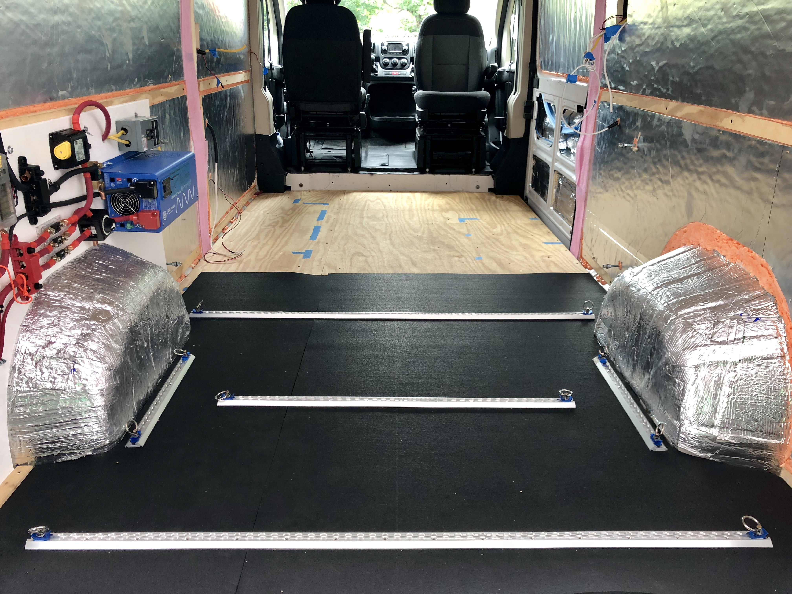Between the L-track and 1/2" plywood floor, I added 1/4" recycled rubber mat. This will act as a sound dampener and create a more durable surface for the "garage". It's the type of mat you would find in a gym under the weights & equiptment.
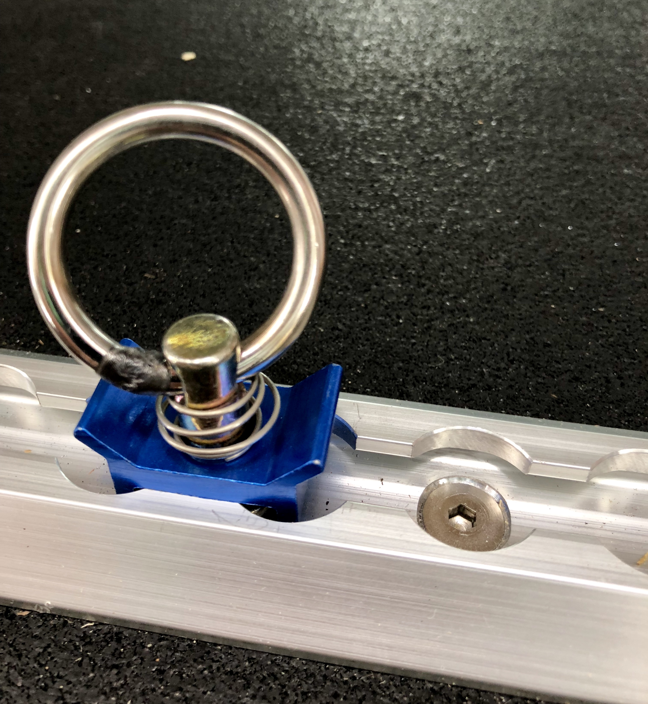L-track is nice because it's modular and lightweight, and you can find all sorts of anchors/tie downs for it. I purchased 10 fittings with rings that I can easily reposition & tie things to. This is also how I will secure the batteries from moving around.
I cut & shaped 1/4" birch plywood for all the walls and ceilings. After installing and making sure everything fit together, I removed the pieces in order to upholster them in a white vinyl I found on Amazon. I decided to use vinyl instead of paint because it's easier to clean and should make for a slightly quieter ride.
I ended up going with 3x 175 Watt Newpowa solar panels. 525 watts of solar is probably more than I need, but since I'm going to be installing an induction cooktop, I figure more solar is better so I'm not as limited in when/what I cook. The panels fit well on the roof and sit just behind the roof fan. They're mounted less than 1" off of the roof, so when looking at the van from street level, you can't exactly tell they're solar panels.

I first attached all 3 panels together using 1" square aluminum tube and 5/16" stainless bolts & washers (the bolt facing the camera in the above picture). I then used 5/16" carriage bolts to attach the entire frame to the van's factory installed roof rack tie downs (the bolts pointed up in the picture). I bought the roof rack brackets from Vantech and they fit really well, far better than drilling holes in the roof in my opinion.
Once I finished upholstering the plywood sheathing in vinyl and confirmed the electrical system worked as planned, I started wiring all the USB ports, outlets, and ceiling LEDs.
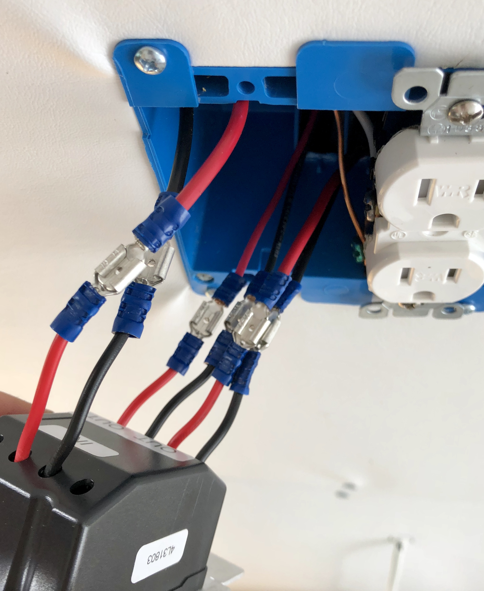This is wiring for a 2-zone dimmer switch, so I can control the front & rear ceiling LEDs from the same switch.

Wiring the ceiling LEDs in series/parallel. This is the setup before soldering and adding heat shrink tubing.
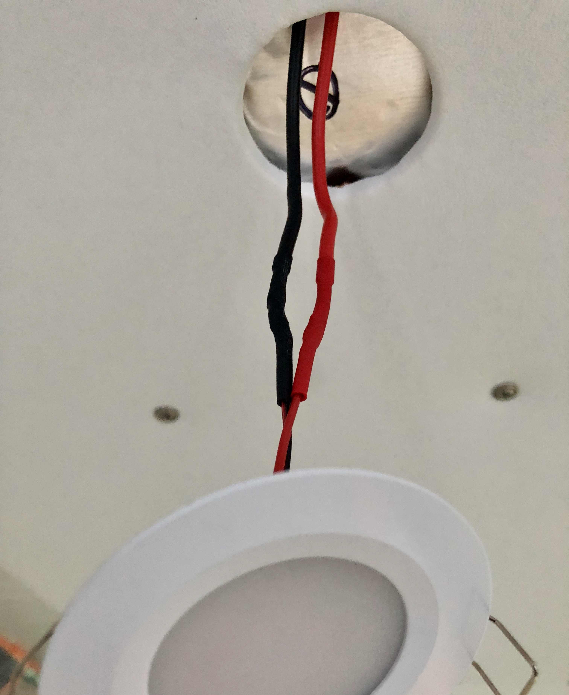A ceiling LED after it's been wired. This will be mounted in the hole in the background and so it sits flush with the ceiling.
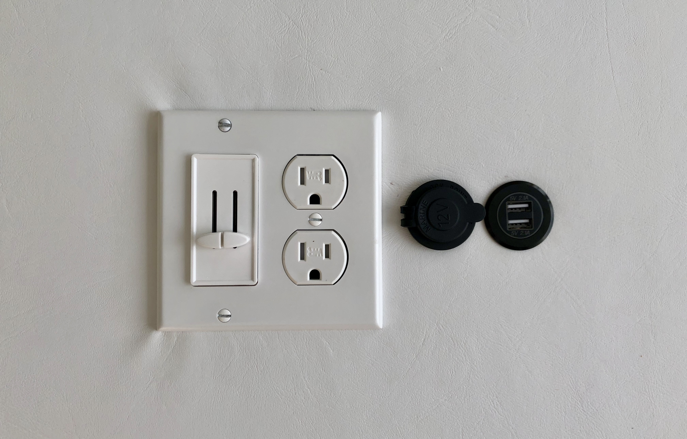Installed from L to R: ceiling LED dimmer switch, 120v AC outlets, 12v cigarette outlet, 12v USB ports.
That just about finishes the "foundation" of the van, almost everything from here on out will be building the interior (bed, cabinets, etc). First step was to install the bed posts. As mentioned in Step 8, I had previously installed bolts attached to the vehicle frame that would anchor my bed frame. So I installed the bed post, which is made of 1x4" clear pine, and then began to construct the frame that the mattress will rest upon.
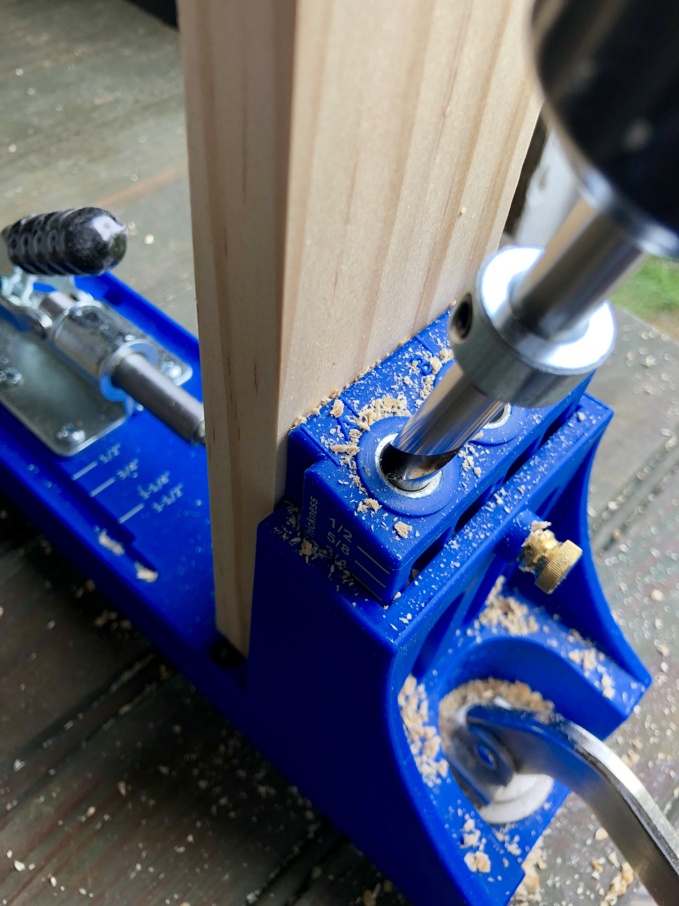I used a pocket jig and some wood glue to create strong 90 degree joints.
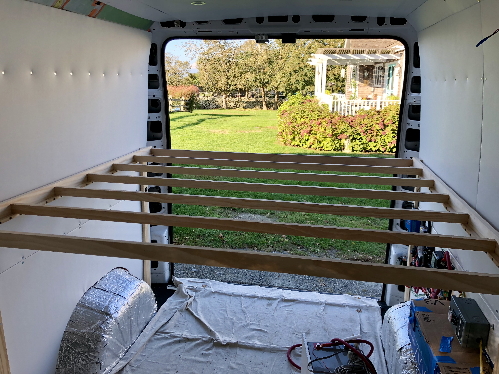The bottom of the bed frame sits 39.5" above the floor, which should be enough space to store a few mountain bikes.
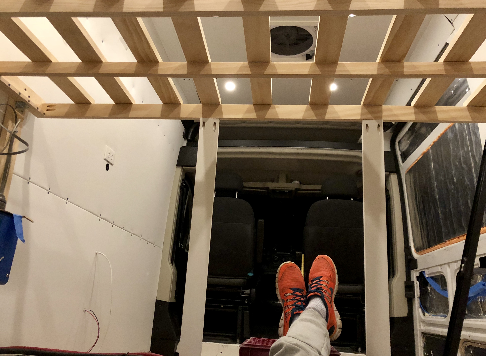And then I added 62" slats that run perpindicular, which will help with weight distribution. This is what my mattress will sit on.
I built the "living room", which consists of one unit that houses both the refridgerator and sofa (see Step 4). On top of the fridge (black box in the top left) will sit a 22x22" countertop, and below it will be a drawer/storage. The sofa/bench is on the right, it's 42" long so it should fit 2 people. The frame is built out of 1" by various sized (either 3 or 4") clear pine boards. Again, I used pocket holes & wood glue to secure everything.
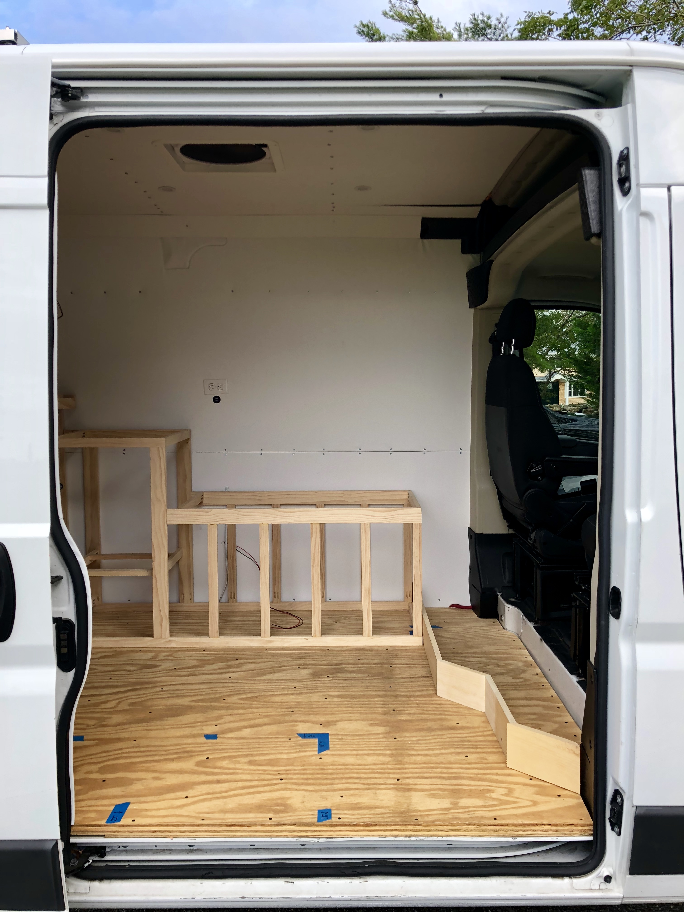Here you can see where the unit will be installed (after some sanding/priming/painting). I also started working on a 6" step (wood piece to the right of the unit) that will be used when the driver/passenger seats are swiveled around. Under the step will be storage. The driver & passenger seats are 24" off the floor (normal height is around 18"), so without the step your feet dangle in the air, hence why I built the step.
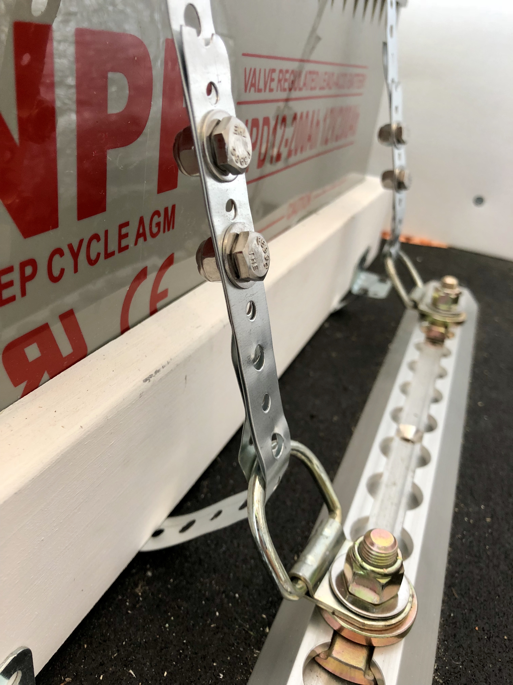I also anchored the batteries to the van. Each battery weights ~120lbs, so ensuring they're properly secured is important since I don't want one of those flying towards me if I were to break suddenly. I wrapped steel hanger iron in 2 places around around each battery and then used 2 stainless bolts per piece to secure the strap in place. I attached the strap to the L-track using some stainless D-rings and some double lug fittings.
I wanted a waterproof layer between the floor people will see/walk on and the plywood sub floor, so I found a piece of vinyl in the remnants section at Lowes for $20 and installed that. Since nobody will see this, I didn't care what it looked like which is good becuase it's hideous.
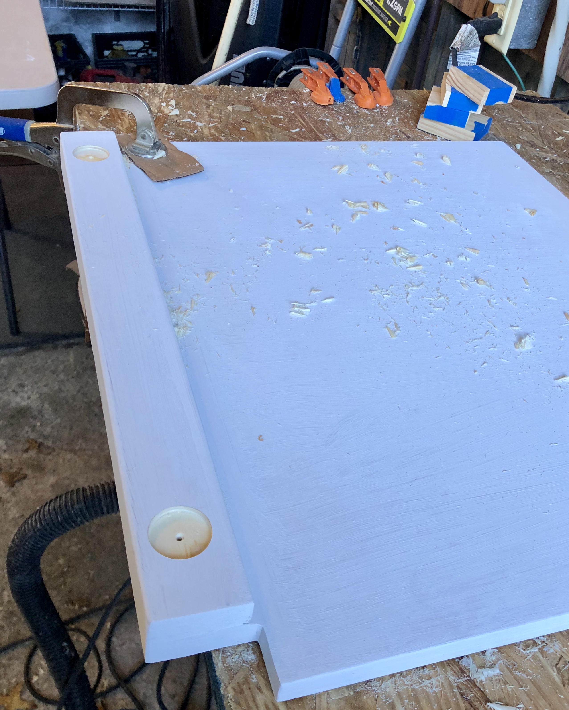 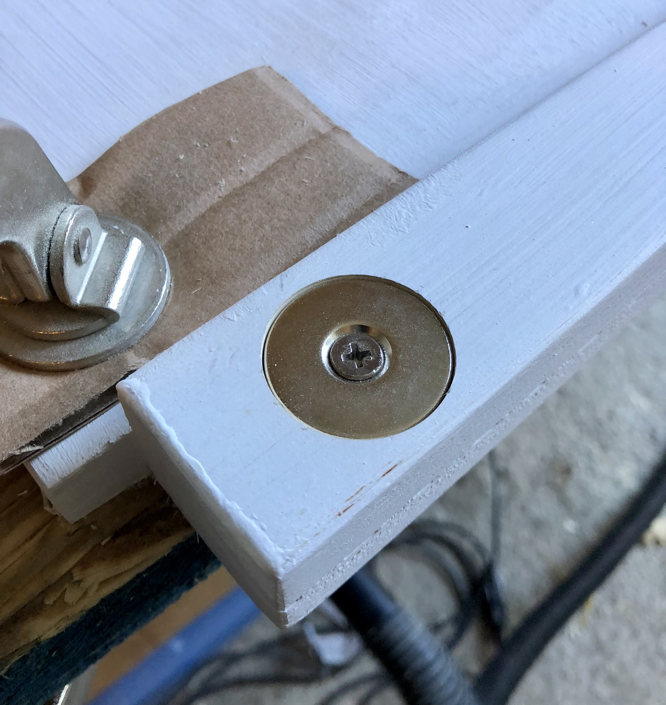The step has 3 pieces that lift up to reveal storage space, so to keep them in place while driving I countersunk some neodymium magnets to the bottom of those pieces. I really like magnets and plan to use them quite frequently in this build.
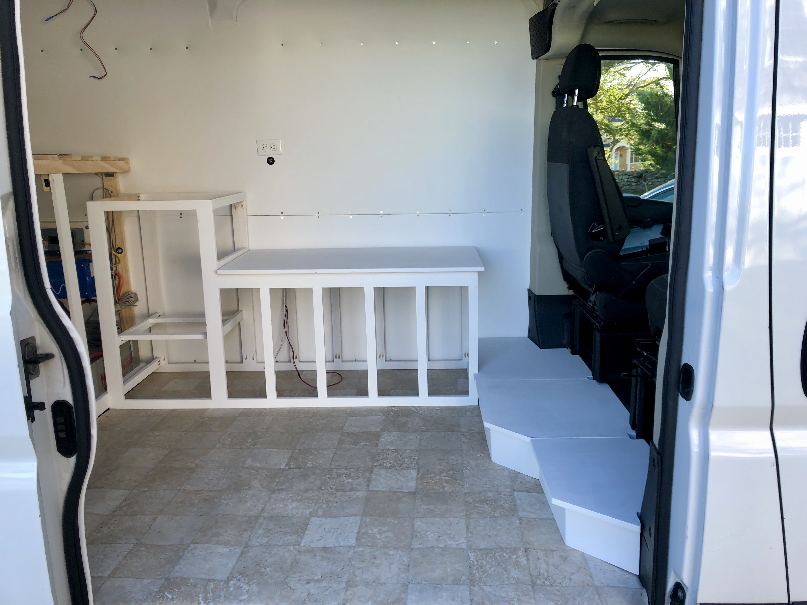Here is what the step and living room unit look like after being primed. I also installed those same magnets on the underside of the bench seat.